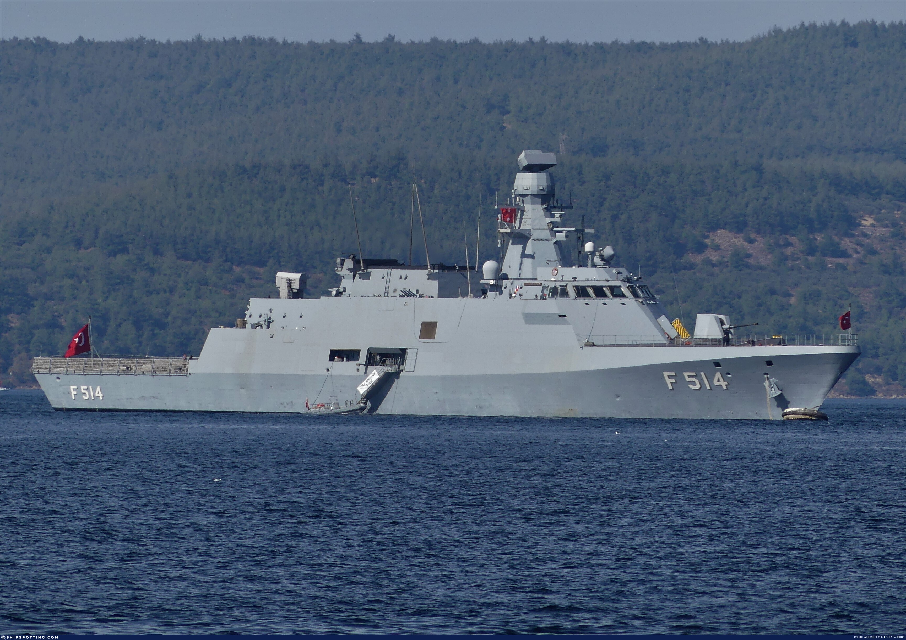
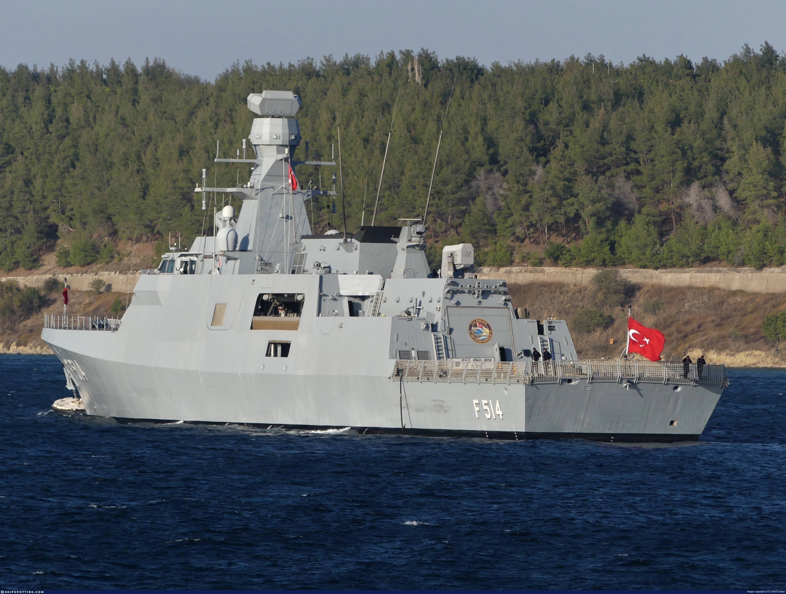
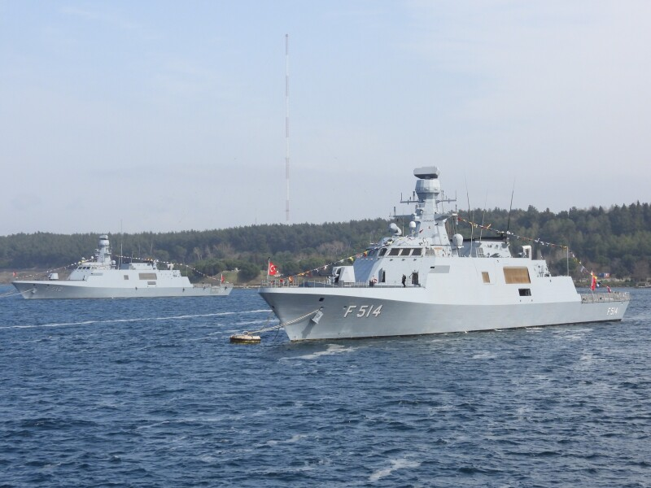

❮
❯
MİLGEM Ada Sınıfı korvetlerin dördüncü ve son gemisi.
TCG Kınalıada (F-514), Türkiye’nin milli savaş gemisi programı olan MİLGEM kapsamında geliştirilen Ada Sınıfı korvetlerin dördüncü ve son gemisidir. Platform, sınıfın olgunlaşmış örneği olarak denizaltı savunma harbi, suüstü harbi, deniz gözetleme, keşif-karakol ve kıyı güvenliği görevlerinde kullanılmak üzere tasarlanmıştır.
Ada sınıfı korvetler; düşük radar görünürlüğü, gelişmiş savaş yönetim sistemi, helikopter konuşlandırma kabiliyeti, modern radar ve sonar sistemleri ile Türk Deniz Kuvvetleri için çok rollü, milli savaş gemisi yaklaşımının temel platformlarıdır. Kınalıada da bu sınıfın son gemisi olarak sınıf içi kabiliyetlerin en gelişmiş örneklerinden biri kabul edilmektedir.
Platform; hava, suüstü ve sualtı tehditlerinin tespiti, sınıflandırılması, tanımlanması ve imhası yanında münhasır ekonomik bölge gözetleme, kritik altyapı koruma ve deniz karakol görevlerinde kullanılabilecek şekilde yapılandırılmıştır.



| Gemi Sınıfı | Ada Sınıfı Korvet |
| Gemi Adı | TCG Kınalıada |
| Borda Numarası | F-514 |
| Program | MİLGEM |
| Sınıftaki Yeri | Ada Sınıfı’nın dördüncü ve son gemisi |
| Omurga Kızağa Konuluşu | 8 Ekim 2015 |
| Denize İndirilme | 3 Temmuz 2017 |
| Hizmete Giriş | 29 Eylül 2019 |
| Görev Profili | Denizaltı savunma harbi, keşif-karakol, deniz gözetleme, suüstü harbi, kıyı ve kritik altyapı koruma, MEB devriyesi |
| Temel Uzmanlık | Denizaltı savunma harbi (ASW) |
| İkincil Roller | Suüstü harbi, refakat, deniz karakol, gözetleme ve caydırıcılık görevleri |
| Boy | 99,56 m |
| Genişlik | 14,40 m |
| Draft | Yaklaşık 3,9 m |
| Deplasman | Yaklaşık 2.400 ton |
| Tahrik Sistemi | RENK CODAG (Combined Diesel and Gas) |
| Şaft Sayısı | 2 |
| Gaz Türbini | 1 adet gaz türbini |
| Dizel Motor | 2 adet dizel motor |
| Sevk Düzeni | Ekonomik seyirde dizel, yüksek süratte gaz türbini destekli birleşik tahrik |
| Ekonomik Hız | 15 knot sınıfı |
| Azami Hız | 30 knot sınıfı |
| Menzil | 3.500 deniz mili @ 15 knot |
| Dayanım | 21 gün lojistik destekle, yaklaşık 10 gün otonom |
| Mürettebat | 93 |
| Azami Barındırma | 106 kişiye kadar |
| RHIB | 2 adet RHIB |
| Helikopter Platformu | Mevcut |
| Hangar | Mevcut |
| Helikopter Kapasitesi | S-70B Seahawk ASW helikopteri |
| İHA Desteği | İHA konuşlandırma ve görev desteği |
| Havacılık Altyapısı | Mühimmat depolama, JP-5 yakıt, HIRF ve bakım destek altyapısı |
| Gövde Tasarımı | Düşük radar kesit alanlı stealth gövde formu |
| Akustik İz Azaltma | ASW görevleri için azaltılmış akustik iz yaklaşımı |
| Manyetik İz Azaltma | Degaussing sistemi |
| IR İz Yönetimi | Kızılötesi iz azaltıcı tasarım yaklaşımı |
| Savaş Yönetim Sistemi | ADVENT (sınıfın son gemisinde GENESIS’in gelişmiş sürümü) |
| Arama Radarı | SMART-S Mk2 3B radar |
| Atış Kontrol Radarı | STING EO Mk2 sınıfı atış kontrol sensörü |
| Sonar | Hull Mounted Sonar / TBT-01 Yakamoz sınıfı sistem |
| Elektronik Harp | ASELSAN ARES-2N ve ilgili elektronik destek / karşı tedbir altyapısı |
| Torpido Savunma | Sea Sentor Surface Ship Torpedo Defense System sınıfı altyapı |
| Platform Yönetim Sistemi | UniMACS 3000 IPMS |
| Seyrüsefer Sistemleri | ECPINS-W, GPS, ECDIS/WECDIS, X-band radar |
| Taktik Veri Bağı | Link 11 / Link 16 sınıfı entegrasyon |
| Ana Top | 1 × 76 mm OTO Melara Super Rapid |
| Yakın Hava Savunma | 21 hücreli RAM lançeri |
| İkincil Silahlar | 2 × 12,7 mm ASELSAN STAMP |
| Gemi Savar Füze | 8 × ATMACA |
| Torpido Sistemi | 2 × 324 mm Mk.32 üçlü lançer |
| Torpido Mühimmatı | Mk.46 sınıfı torpido |
| Silah Profili | Hava, suüstü ve sualtı tehditlerine karşı çok katmanlı angajman |
| Sınıf İçi Farklılık | Son gemi olması nedeniyle ADVENT ve ATMACA gibi daha yeni milli sistem entegrasyonlarıyla öne çıkar |
| Program Önemi | Ada sınıfı serisinin tamamlanmasını sağlayan ve sonraki İ sınıfı tasarıma geçişte tecrübe kazandıran korvet |
| Öne Çıkan Özellik | Düşük görünürlük, güçlü ASW sensörleri, ADVENT savaş yönetim sistemi ve ATMACA entegrasyonuyla Ada sınıfının en gelişmiş gemisi |